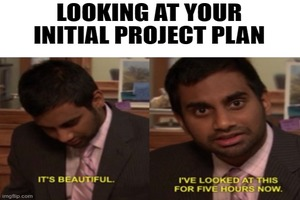

Project Planning Phase
This section will detail the project management stage of this project. This includes the breakdown of the project team structure displayed by an organigram. The basic project requirements will be defined using a project objective and mission need statement. The work breakdown structure is developed to assist in the creation of the Gantt chart which details the work being completed at each stage of the project. Documentation is kept within the Gantt chart that provides basic information of each stage such as which team member completed the task and when it was completed.
